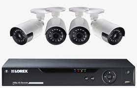
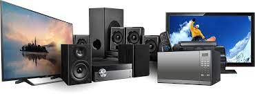
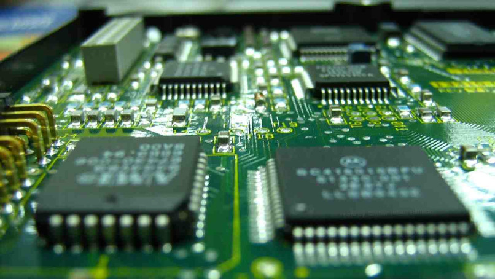
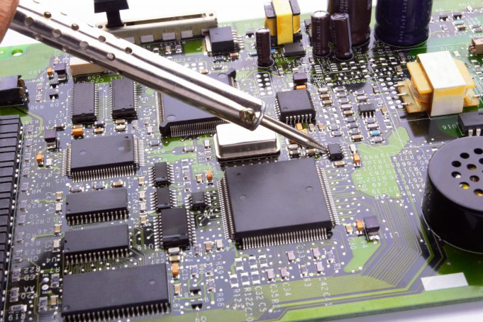
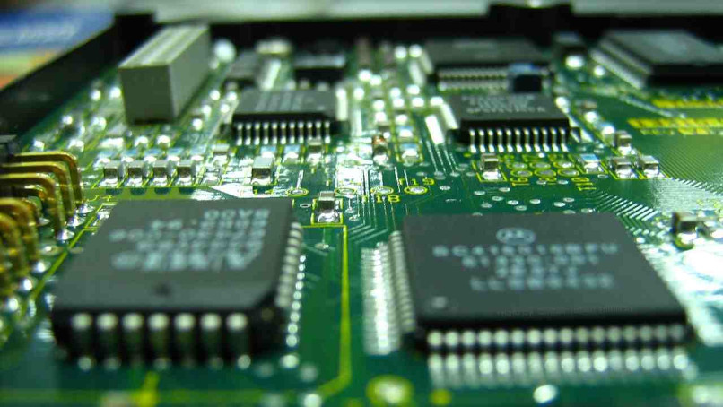
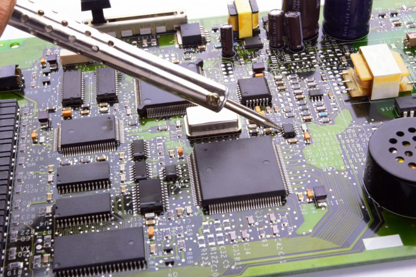

Concertos Eletrônicos
Eletrônica Picinini oferece serviços relacionados a concertos de aparelhos eletrônicos e instalação de Câmeras.
Formada por profissionais qualificados que garantem a eficiência e a satisfação dos clientes.
Veja onde fica o nosso estabelecimento no Maps

Concertos de TVs
Ninguém gosta de ser pego de surpresa com o mau funcionamento ou a quebra do aparelho de televisão, não é mesmo?
Nessa hora, o primeiro passo é solicitar um orçamento para avaliar o custo do reparo.
Segundo os próprios técnicos recomendam que vale a pena consertar a televisão pois o valor ficar entre 35% e 50% do valor de uma nova,
o que abrange cerca de 90% dos defeitos dos televisores.

Instalação de Câmeras
A instalação de câmeras de segurança, pode ser feita em residências e pontos comerciais,
usadas em áreas externas e internas. Acesse suas imagens através de um celular e monitore sua casa ou escritório a distância.

Concerto de Eletrodomésticos e eletrônicos
Já parou para pensar na variedade de eletrodomésticos que você tem no seu imóvel? Eles estão por toda a parte para facilitar a sua vida.
Todavia, com o tempo eles estragam e quando isso acontece, o ideal é contar com um serviço especializado, Assim você evita com que eles
sofram mais danos e garante que eles voltem a funcionar normalmente.
.png)
.png) 


